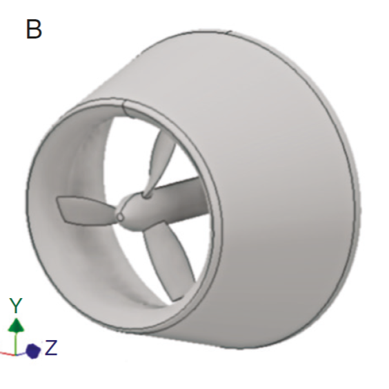
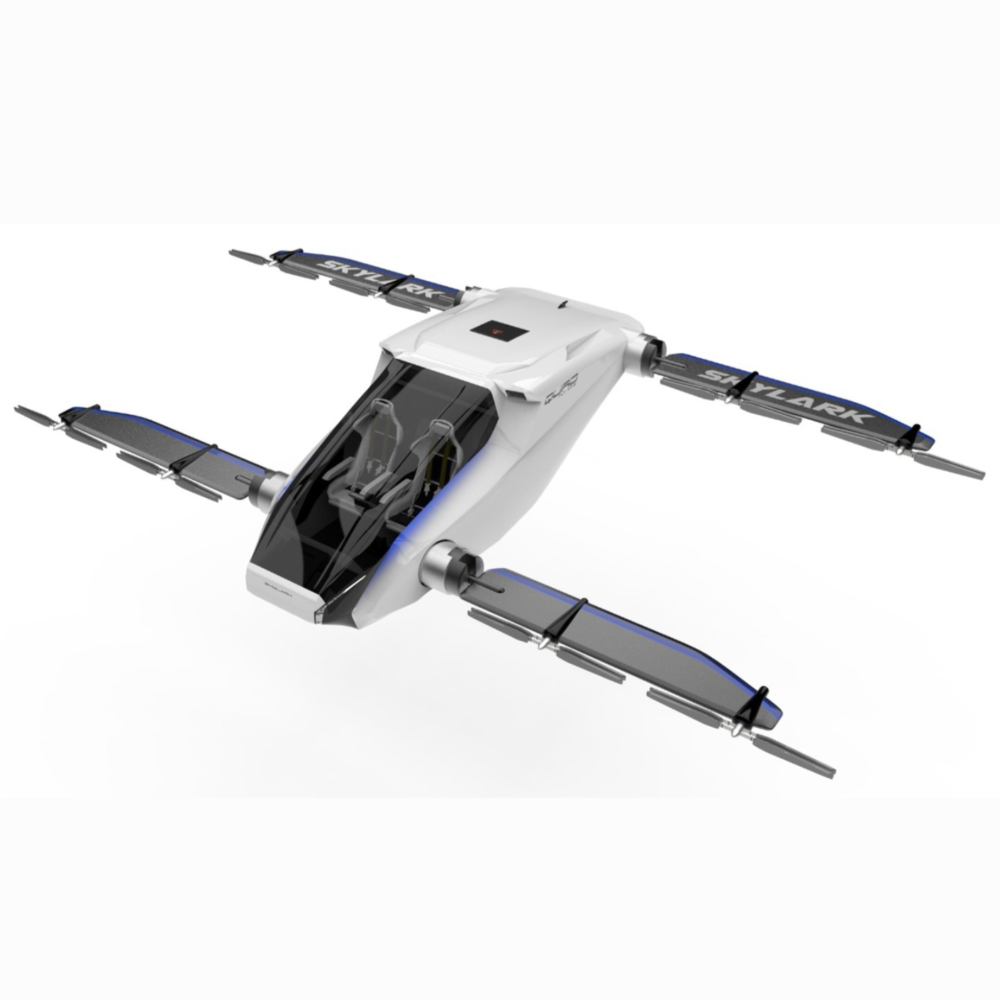
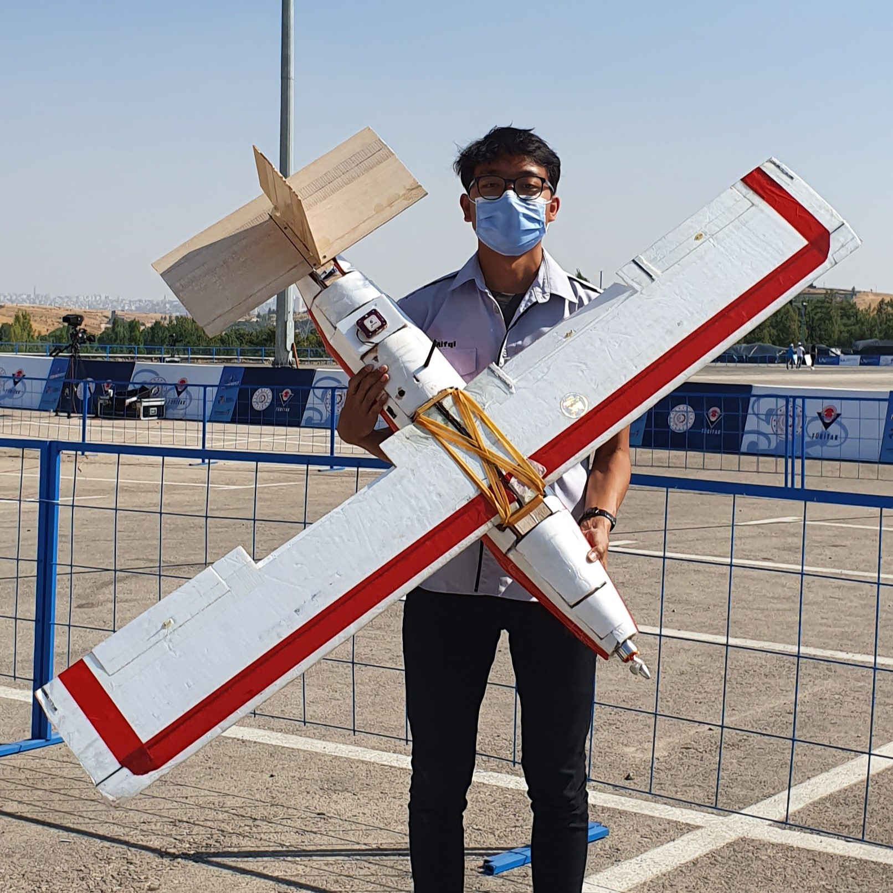
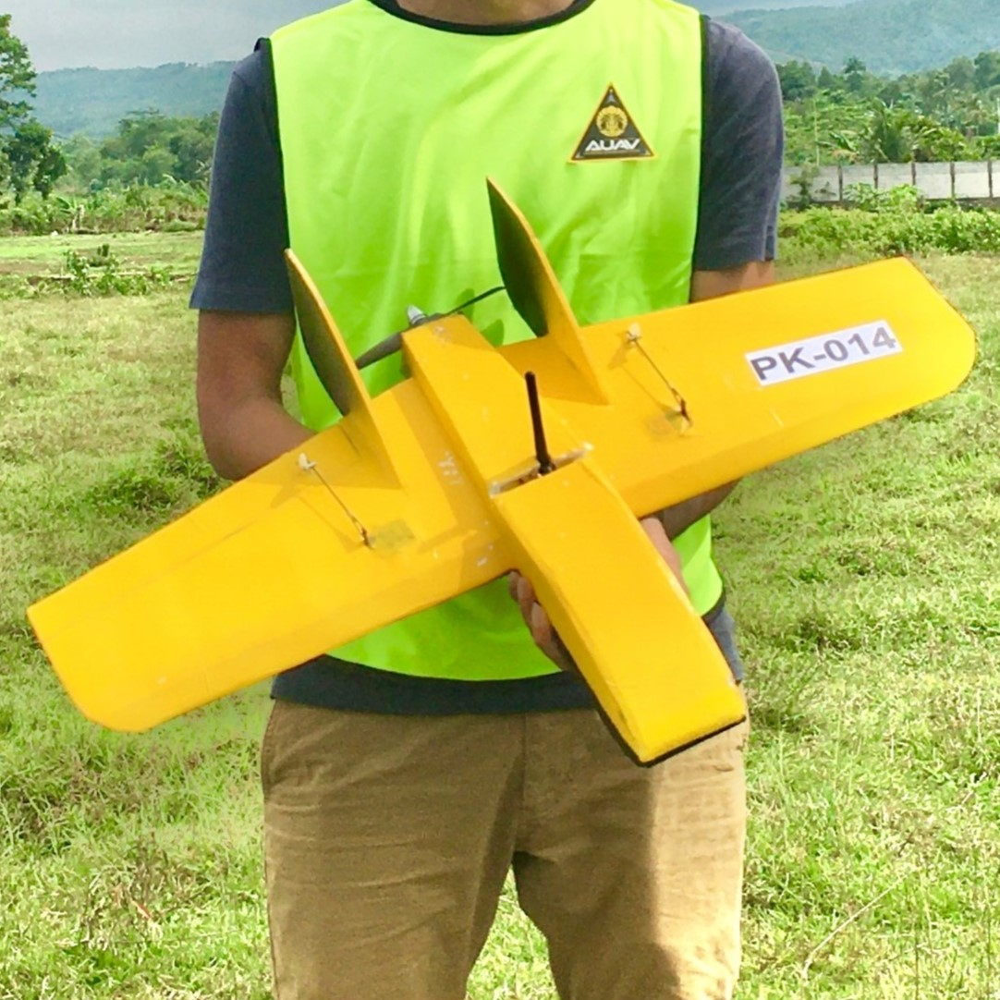
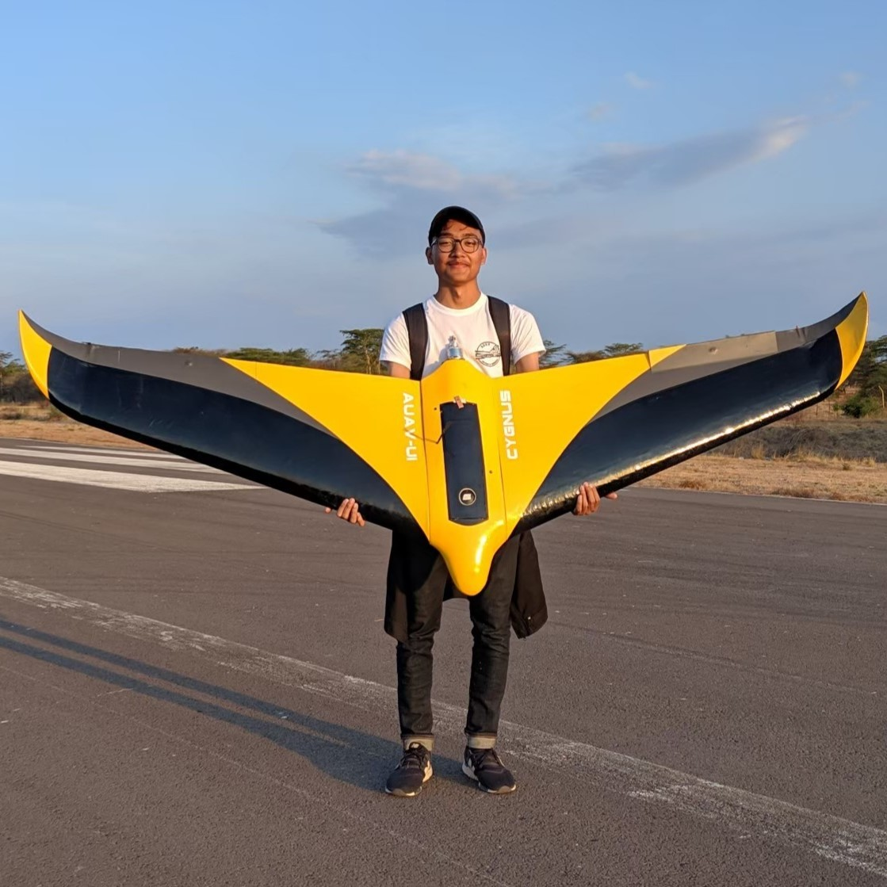
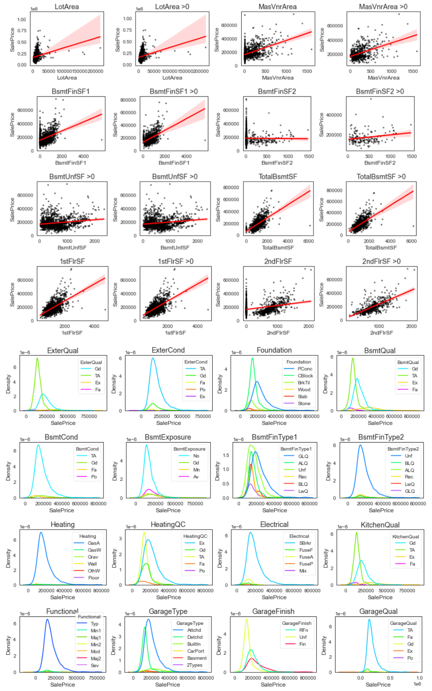
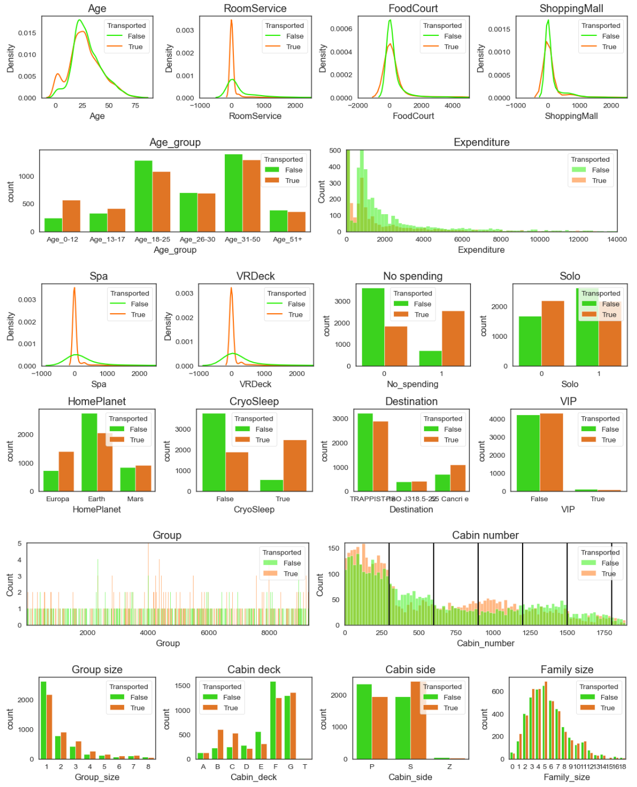
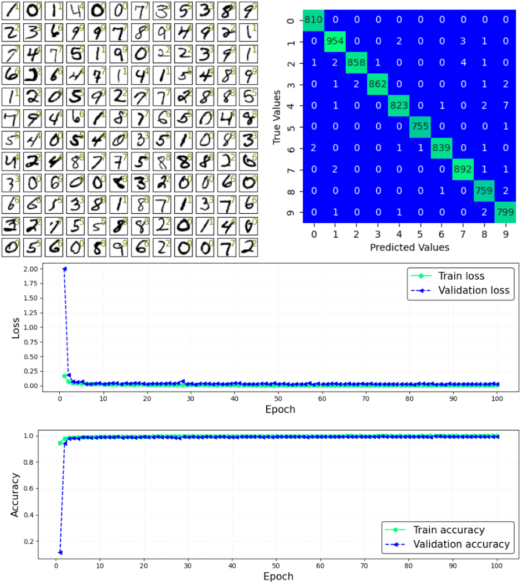
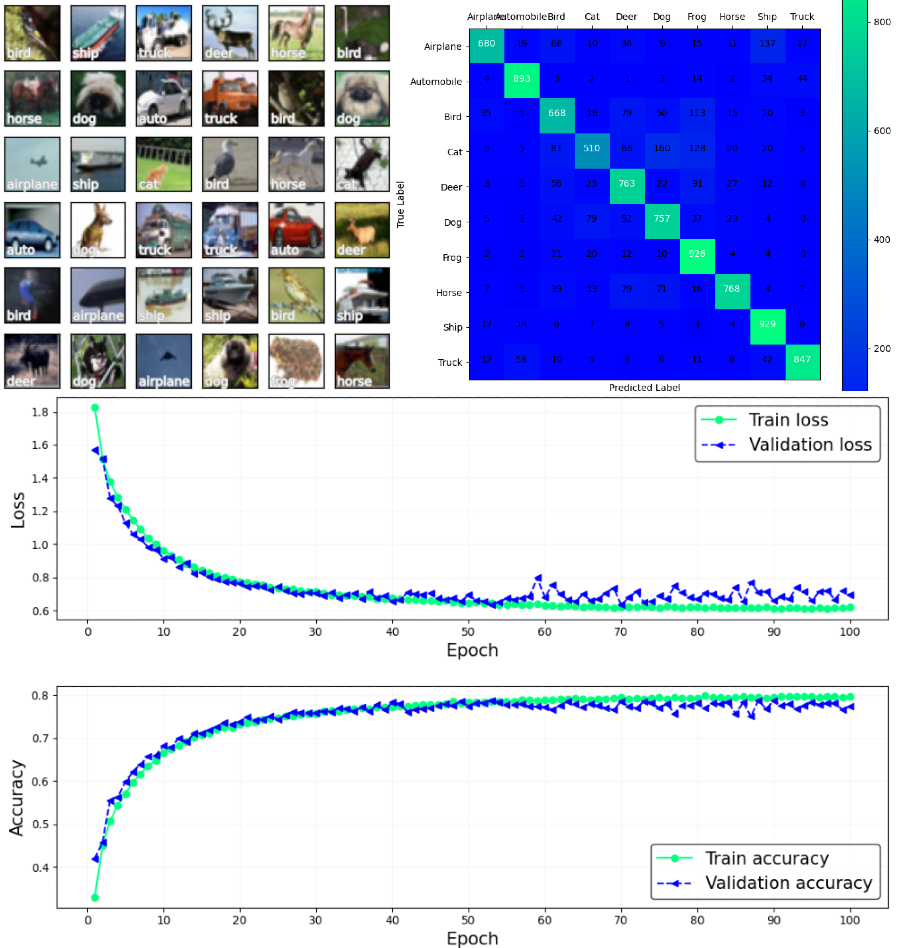
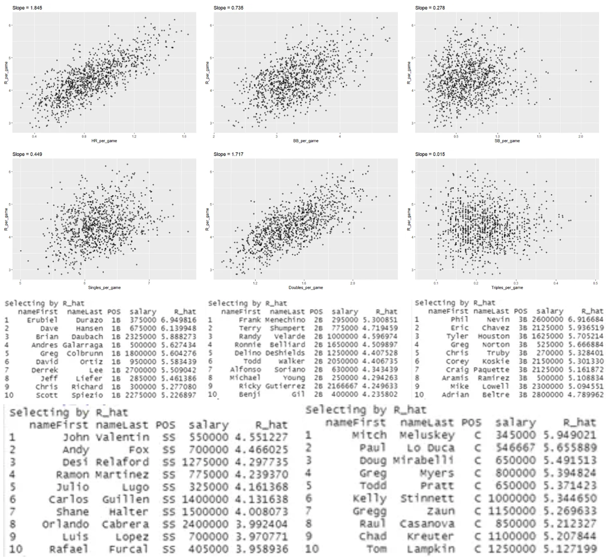

|
Rifqi Azhari
I am a researcher interested in
embodied intelligence for autonomous physical systems
,
with a background in mechanical engineering and data science.
I am interested in understanding and building intelligent systems
that can
perceive and model the physical world, predict what could happen,
decide what should happen, and control themselves to make it happen
.
My research lies at the intersection of
machine learning, decision-making, and control
,
with a particular focus on how autonomous systems can learn
predictive models of the physical world, anticipate the
consequences of their actions, and use those predictions for
reliable decision-making and control.
My background spans
UAV robotics and autonomous systems, fluid dynamics and energy
systems, and applied machine learning
.
I am particularly interested in
learning-based predictive autonomy
across aerial robotics, autonomous vehicles, and general robotic
systems.
Email
/
CV
/
Scholar
/
ORCID
/
LinkedIn
/
Github
|
|
|

|
Experimental Study on The Optimum Design of
Diffuser-Augmented Horizontal-Axis Tidal Turbine
by
Flow Control Lab
Oxford University Press (OUP) Clean Energy,
Volume 6, Issue 5, 776–786, 2022
Compared experimentally two different diffuser angles in a
diffuser-augmented horizontal axis tidal turbine in a flowing tank
with a current velocity of 0.7 m/s. Those two angles came up as the
most optimal angles from the previous numerical research which was
conducted with multi-objective optimization methods such as genetic
algorithms and neural networks.
|
|

|
Hybrid Vertical Take-Off Landing (VTOL) Fixed Wing
Urban Air Mobility Design with Foldable Wing
by
Flying Car Universitas Indonesia
Teknofest Flying Car Design Competition,
Istanbul, 2021
Built passenger drone design that could travel up to 300 km.
Designed with multiple cameras as its main autonomy sensor,
the drone adopted Convolutional Neural Networks (CNN) algorithm
as its main algorithm.
|
|

|
Goods Transporter Small High Wing Unmanned Aerial Vehicle
with Color Sensor Camera
by
UAV Universitas Indonesia
TÜBİTAK International Unmanned Aerial Vehicles (UAV) Competition,
Gaziantep, 2020
Built a goods carrier drone that could carry small objects with
maximum size of 10x10 cm. Equipped with color detector camera that
had been developed on the python OpenCV, the payload will instantly
be dropped at the time the camera detected the target area.
Designed with a high wing model, the UAV could fly at a very low
speed due to high lift generated from the high wing.
|
|

|
Circuit Racer Micro Flying Plank Unmanned Aerial Vehicle
with Mechanical Launcher
by
UAV Universitas Indonesia
Rifqi Azhari (Team Leader)
,
Daniel Simatupang,
Adam Maulana,
Syafira Tasya,
Edrian Budi,
Louis,
Anindya,
Laksamana Wibowo,
Dr. Radon Dhelika
(Advisor)
Kontes Robot Terbang Indonesia (KRTI),
Jonggol, 2020
Built an agile drone that has the ability to maneuver in a high
speed condition. Powered by a 6S lithium polimer battery, the drone
can perform high acceleration, which allows it to reach its maximum
speed in a very short time. Additionaly, the drone was also
equipped with auto-throttle and catapult for its launch mechanism.
The elastic potential energy from the launcher helps the drone to
take off rapidly, giving a big initial velocity for the propulsion
system.
|
|

|
Aerial Mapper Small Flying Wing Unmanned Aerial Vehicle
by
UAV Universitas Indonesia
Viliasio Sirait (Team Leader),
Farhan Oktavian,
Marwah Zulfanny,
Rifqi Azhari,
Fadhil Dwinanda,
Ilham Santoso,
Rivaldo Marta,
Prof. Ario Sunar Baskoro
(Advisor)
Kontes Robot Terbang Indonesia (KRTI),
Pasuruan, 2019
Built a drone that has mission to collect visual data and create
2-dimensional maps of areas while conduct live video streaming
during the data collecting process. Designed as a flying wing model
with big winglets, the drone could fly very stable and turn very
easily in a small radius so the map does not have any gaps.
|
Teaching
|
-
Teaching Assistant of
Control System
(Applied Mathemathics) Faculty of Engineering
Universitas Indonesia 2020-2021
-
Teaching Assistant of
Calculus 2
Faculty of Engineering Universitas Indonesia 2020
|
|

|
Predict House Prices (Regression) using XGBoost,
Linear Regression, Ridge Regression, Lasso Regression,
Lightgbm Regression, and CatBoost Regression with
Cross Validation (Top 13% in Kaggle - Solo)
Developed and compared multiple regression models to predict
residential sale prices using the Ames Housing dataset.
CatBoost achieved the strongest performance, reaching the
top 13% of the Kaggle leaderboard.
|
|

|
Predict Spaceship Titanic Passenger Who Got Transported
(Classification) using Logistic Regression, Random Forest,
KNN, Decision Trees, SVM, GradientBoosting Classifier,
Catboost Classifier with Cross Validation
(Top 7% in Kaggle - Solo)
Developed and compared multiple classification models to predict
whether passengers were transported to an alternate dimension
in Kaggle's Spaceship Titanic dataset. CatBoost achieved
0.80734 test accuracy and a top 7% leaderboard result.
|
|

|
MNIST Digit Recognizer using VGG16 and ResNet50
with TensorFlow (Top 9% in Kaggle - Solo)
Built convolutional neural network models with TensorFlow to
classify handwritten digits from the MNIST dataset. Explored
VGG16 and ResNet50 architectures and achieved a top 9% result
on the Kaggle leaderboard.
|
|

|
CIFAR-10 Image Classification using VGG16 and ResNet50
with TensorFlow
Developed TensorFlow-based image classification models for
the CIFAR-10 dataset, exploring VGG16 and ResNet50 architectures
to classify images across ten object categories.
|
|

|
Building a Baseball Team with Limited Budget ($40M)
for 2002 MLB Season (code in R)
Analyzed team- and player-level MLB statistics from the Lahman
database in R to construct a competitive 2002 baseball roster
under a $40 million budget constraint.
|
Outside of Research
|
|
⛳ Golf
— Open to teaching beginners and looking for driving-range partners.
🎾 Tennis
— Looking for upper-beginner hitting partners.
🥊 Boxing
— Looking for amateur sparring partners in featherweight & lightweight.
🏀 Basketball
— Retired competitive guard; regional & national tournament experience.
Open to lower-level play.
🏃 Athletics
— Retired competitive runner; primarily 400 m & 800 m,
also 100 m, 1,500 m & 10K.
🎮 Gaming
— Retired competitive player; local to national tournament experience.
🎵 Music
— Retired professional musician; drums, conga, bongo, djembe,
bass guitar, cajón & darbuka.
|
|